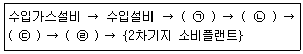
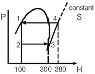
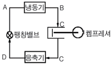
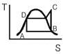
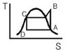
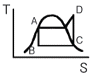
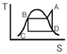
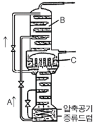

가스산업기사 (2008-05-11 기출문제)
1과목: 연소공학
1. 다음 가스가 같은 조건에서 같은 질량이 연소할 때 발열량(kcal/kg)이 가장 높은 것은?
- 수소
- 메탄
- 프로판
- 아세틸렌
(정답률: 68%)

2. 최소점화에너지에 대한 설명으로 옳은 것은?
- 유속이 증가할수록 작아진다.
- 혼합기 온도가 상승함에 따라 작아진다.
- 유속 20m/s까지는 점화에너지가 증가 하지 않는다.
- 점화에너지의 상승은 혼합기 온도 및 유속과는 무관하다.
(정답률: 71%)
3. 200L의 프로판가스를 완전연소시키는데 필요한 공기는 약 몇 L인가?(단, 공기 중의 산소농도는 20v%이다.)
- 1000
- 2000
- 4000
- 5000
(정답률: 60%)
4. 가스의 연료로서 주로 LNG와 LPG가 사용 된다. 천연가스의 일반적인 연소 특성에 대한 설명으로 옳은 것은?
- 지연성 가스이다.
- 폭발범위가 넓다.
- 화염전파속도가 늦다.
- 연소 시 많은 공기가 필요하다.
(정답률: 62%)
5. 연소와 폭발에 대한 설명 중 틀린 것은?
- 연소란 열의 발생을 수반하는 산화반응이다.
- 분해 또는 연소 등의 반응에 의한 폭발은 화학적 폭발이다.
- 발열속도가 방열속도보다 클 경우 발화점 이하로 떨어져 연소과정에서 폭발로 이어진다.
- 폭발이란 급격한 압력의 발생 또는 폭발음을 내며 파열되거나 팽창하는 현상이다.
(정답률: 79%)
6. 연료발열량(H1) 10000kcal/kg, 이론공기량 11m3/kg, 과잉공기율 30%, 이론습가스량 11.5m3/kg, 외기온도 20℃일 때 이론 연소온도는 약 몇 ℃인가? (단, 연소가스의 평균비열은 0.31kcal/m3·℃이다.)
- 1510
- 2180
- 2200
- 2530
(정답률: 53%)
7. 공기 중에서 폭발하한계 값이 가장 낮은 가스는?
- 수소
- 메탄
- 부탄
- 일산화탄소
(정답률: 85%)
8. 고위발열량과 저위발열량의 차이는 연료의 어떤 성분 때문에 발생하는가?
- 유황과 질소
- 질소와 산소
- 탄소와 수분
- 수소와 수분
(정답률: 82%)
9. 화재나 폭발의 위험이 있는 장소를 위험장소라 한다. 다음 중 제1종 위험장소에 해당 하는 것은?
- 정상작업조건 하에서 인화성 가스 또는 증기가 연속해서 착화 가능한 농도로서 존재하는 장소
- 정상작업조건 하에서 가연성 가스가 체류하여 위험하게 될 우려가 있는 장소
- 가연성 가스가 밀폐된 용기 또는 설비의 사고로 인해 파손되거나 오조작의 경우에만 누출할 위험이 있는 장소
- 환기장치에 이상이나 사고가 발생한 경우에 가연성 가스가 체류하여 위험 하게 될 우려가 있는 장소
(정답률: 80%)
10. 온도 30℃, 압력 740mmHg인 어떤 기체 342mL를 표준상태(0℃, 1기압)로 하면 약 몇 mL가 되겠는가?
- 300
- 316
- 350
- 390
(정답률: 61%)
11. 30℃, 1기압에서 수소 0.15g, 질소 0.90g, 암모니아 0.68g으로 된 혼합가스가 있다. 이 혼합가스의 부피는 약 몇 L인가? (단, 원자량은 각각 H는 1, N은 14이다.)
- 0.01
- 1.73
- 2.97
- 3.66
(정답률: 35%)
12. 연소에서 불꽃의 전파속도가 음속보다 빠를 때를 무엇이라 하는가?
- 폭발
- 발화
- 전화
- 폭굉
(정답률: 89%)
13. 가스연료와 공기의 흐름이 난류일 때의 연소상태에 대한 설명으로 옳은 것은?
- 화염의 윤곽이 명확하게 된다.
- 층류일 때보다 연소가 어렵다.
- 층류일 때보다 열효율이 저하된다.
- 층류일 때보다 연소가 잘 되며, 화염이 짧아진다.
(정답률: 78%)
14. 다음 이상기체에 대한 설명 중 틀린 것은 어느 것인가?
- 이상기체는 분자 상호간의 인력을 무시한다.
- 이상기체에 가까운 실제기체로는 H2, He 등이 있다.
- 이상기체는 분자 자신이 차지하는 부피를 무시한다.
- 저온, 고압일수록 이상기체에 가까워진다.
(정답률: 85%)
15. 폭발에 관한 가스의 일반적인 성질에 대한 설명 중 틀린 것은?
- 안전간격이 클수록 위험하다.
- 연소속도가 클수록 위험하다.
- 폭발범위가 넓은 것이 위험하다.
- 압력이 높아지면 일반적으로 폭발범위가 넓어진다.
(정답률: 90%)
16. 부피로 Hexane 0.8v%, Methane 2.0v%, Ethylene 0.5v%로 구성된 혼합가스의 LEL을 계산하면 얼마인가? (단, Hexane, Methane, Ethylene의 폭발하한계는 각각 1.1vol%, 5.0vol%, 2.7vol%이라고 한다.)
- 2.5%
- 3.0%
- 3.3%
- 3.9%
(정답률: 55%)
17. 나무는 다음 중 주로 어떤 연소형태로 연소 하는가?
- 흡착연소
- 증발연소
- 분해연소
- 표면연소
(정답률: 79%)
18. 이상기체를 일정한 부피에서 냉각하면 온도와 압력의 변화는 어떻게 되는가?
- 온도저하, 압력강하
- 온도상승, 압력강하
- 온도상승, 압력일정
- 온도저하, 압력상승
(정답률: 79%)
19. 1kWh의 열당량은 몇 kcal인가?
- 427
- 576
- 660
- 860
(정답률: 73%)
20. 연소와 관련된 식 중 옳게 나타낸 것은 어느 것인가?
- 과잉공기비＝공기비(m)－1
- 과잉공기량＝이론공기량(A0)＋실제공기량
- 실제공기량＝공기비(m)＋이론공기량(A0)
- 공기비＝(이론산소량/실제공기량)－이론공기량
(정답률: 85%)
2과목: 가스설비
21. 다음 중 왕복형 압축기의 용량제어방법이 아닌 것은?
- 회전수의 조절
- 토출밸브의 조절
- 흡입 메인밸브의 조절
- 바이패스밸브를 이용하여 압축가스를 흡입측에 되돌리는 방법
(정답률: 53%)
22. LP가스 수입기지 플랜트를 기능적으로 구별한 설비시스템에서 '고압저장설비'에 해당하는 것은?

- ㉠
- ㉡
- ㉢
- ㉣
(정답률: 83%)
23. 시간당 10m3의 LP가스를 길이 100m 떨어진 곳에 저압으로 공급하고자 한다. 압력손실이 30mmH2O이면 필요한 최소배관의 관경은 약 몇 ㎜인가? (단, pole의 상수 0.7, 가스비중은 1.5이다.)
- 30
- 40
- 50
- 60
(정답률: 49%)
24. 다음과 같이 작동되는 냉동장치의 성적계수(εR)는?

- 0.4
- 1.4
- 2.5
- 3.0
(정답률: 66%)
25. 다음 중 SNG에 대한 설명으로 옳은 것은?
- 순수천연가스를 뜻한다.
- 각종 도시가스의 총칭이다.
- 대체(합성) 천연가스를 뜻한다.
- 부생가스로 고로가스가 주성분이다.
(정답률: 87%)
26. 고압가스 용기의 충전구나사가 왼나사인 것은?
- 질소
- 수소
- 공기
- 암모니아
(정답률: 77%)
27. 다음 그림의 냉동장치와 일치하는 행정위치를 표시한 T-S선도는?





(정답률: 75%)
28. 증기 압축냉동기에서 등엔트로피 과정은 다음 중 어느 곳에서 이루어지는가?
- 응축기
- 압축기
- 증발기
- 팽창밸브
(정답률: 47%)
29. 압력배관용 탄소강관(SPPS)에서 스케줄 번호(Sch)를 나타내는 식은? (단, P는 상용압력[kgf/cm2], S는 허용응력[kgf/mm2]이다.)
- Sch=10×(S/P)
- Sch=1000×(S/P)
- Sch=1000×(P/S)
- Sch=10×(P/S)
(정답률: 64%)
30. 고압가스 설비에 장치하는 압력계의 최고 눈금은?
- 상용압력의 2배 이상, 3배 이하
- 상용압력의 1.5배 이상, 2배 이하
- 내압시험압력의 1배 이상, 2배 이하
- 내압시험압력의 1.5배 이상, 2배 이하
(정답률: 76%)
31. 다음 그림은 공기액화분리를 위한 복식 정류장치이다. 기호에 해당하는 액체의 명칭 및 장치의 명칭을 바르게 나타낸 것은?

- A : O2가 풍부한 액, B : 고압 탑, C : 중간 탑
- A : N2가 풍부한 액, B : 고압 탑, C : 응축기
- A : O2가 풍부한 액, B : 저압 탑, C : 응축기
- A : N2가 풍부한 액, B : 고압 탑, C : 저압 탑
(정답률: 59%)
32. -160℃의 LNG(액비중 0.48, 메탄 : 85%, 에탄 : 15%)를 기화시켰을 때 10℃에서의 부피는 약 몇 배가 되는가? (단, 메탄의 분자량은 16, 에탄의 분자량은 30이다.)
- 62
- 616
- 1232
- 6158
(정답률: 55%)
33. 산소 용기를 보관하는 저장실의 온도는 약 몇 ℃ 이하로 유지하여야 하는가?
- 15
- 25
- 40
- 45
(정답률: 91%)
34. 다음 중 프로판 충전용 용기로 주로 사용되는 것은?
- 무계목 용기
- 용접 용기
- 리벳 용기
- 주철 용기
(정답률: 84%)
35. 적당히 가열 후 급랭하였을 때 취성이 있으므로 인성을 증가시키기 위해 조금 낮게 가열한 후 공기 중에서 서냉시키는 열처리 방법은?
- 담금질(quenching)
- 뜨임(tempering)
- 불림(normalizing)
- 풀림(annealing)
(정답률: 53%)
36. 9% Ni강 완전방호식 LNC 저장탱크(LNG Storage Tanks)의 구성요소로서 가장 거리가 먼 것은?
- 방류둑(Dike)
- 내부탱크(Inner tank)
- 외부탱크(Outer tank)
- 현수천정(Suspended deck)
(정답률: 56%)
37. 프로판의 비중을 1.5라 하면 입상 50m 지점에서의 배관의 수직방향에 의한 압력손실은 약 몇 mmH2O인가?
- 12.9
- 19.4
- 32.3
- 75.2
(정답률: 57%)
38. 다음 중 펌프의 공동 현상을 검토할 때 사용되는 것은?
- 소요동력
- 가동시간
- 토출측 관경
- NPSH
(정답률: 60%)
39. 왕복식 압축기에서 최초상태에서 최종압력 까지 압축할 때 소비되는 압축일의 크기를 옳게 나타낸 것은?
- 등온압축＜폴리트로픽 압축＜단열압축
- 단열압축＜등온압축＜폴리트로픽 압축
- 폴리트로픽 압축＜단열압축＜등온압축
- 단열압축＜폴리트로픽 압축＜등온압축
(정답률: 61%)
40. 고압가스 제조시설 중 압력이 9.8MPa 이상인 압축가스를 용기에 충전하는 경우 압축기와 그 충전장소 사이에 설치하는 것은?
- 방호벽
- 안전밸브
- 긴급차단장치
- 가스누출경보기
(정답률: 68%)
3과목: 가스안전관리
41. 액화가스가 통하는 가스설비 중 단독으로 정전기방지조치를 하여야 하는 설비가 아닌 것은?
- 벤트스택
- 플레어스택
- 저장탱크
- 열교환기
(정답률: 55%)
42. 용기제조자가 용기에 대하여 각인 또는 표시해야 할 사항이 아닌 것은?
- 내압시험압력
- 내압시험에 합격한 연월
- 내용적
- 최고사용압력
(정답률: 49%)
43. 내용적이 50리터인 이음매 없는 용기 재검사 시 용기에 깊이가 0.5㎜를 초과하는 점부식이 있을 경우 본 용기의 합격여부는?
- 합격
- 불합격
- 영구팽창시험을 실시하여 합격여부 결정
- 용접부 비파괴시험을 실시하여 합격여부 결정
(정답률: 66%)
44. 고압가스안전관리법에서 정하고 있는 용기 제조시설의 용기검사 설비에 해당되지 않는 것은?
- 정압기
- 자동밸브 탈착기
- 환경시험설비
- 화염시험설비
(정답률: 60%)
45. 액화석유가스를 충전한 자동차에 고정된 탱크는 지상에 설치된 저장탱크의 외면으로부터 몇 m 이상 떨어져 정차하여야 하는가?
- 1
- 3
- 5
- 8
(정답률: 55%)
46. 가연성 가스를 운반하는 경우 휴대하여야 하는 장비가 아닌 것은?
- 소화설비
- 방독마스크
- 가스누출검지기
- 누출방지 공구
(정답률: 86%)
47. 다음 액화석유가스 판매사업소 및 영업소용기보관실의 시설기준 중 틀린 것은?
- 용기보관실은 불연성 재료를 사용한 가벼운 지붕으로 할 것
- 가스누출경보기는 용기보관실에 설치하되 분리형으로 설치할 것
- 용기보관소 및 사무실은 동일 부지 내에 설치하지 않을 것
- 전기스위치는 용기보관실의 외부에 설치할 것
(정답률: 75%)
48. 차량에 고정된 탱크 운행 시 반드시 휴대하지 않아도 되는 서류는?
- 고압가스 이동계획서
- 탱크 내압시험 성적서
- 차량등록증
- 탱크용량 환산표
(정답률: 79%)
49. 가스도매사업의 정압기지에는 시설의 조작을 안전하고 확실하게 하기 위하여 조명도가 몇 룩스 이상이 되도록 설치하여야 하는가?
- 80
- 100
- 120
- 150
(정답률: 75%)
50. 석유 속에 저장하여야 하는 물질은?
- 에테르
- 황린
- 벤젠
- 나트륨
(정답률: 63%)
51. 고압가스를 운반하는 차량의 안전경계 표지 중 삼각기의 바탕과 글자색은?
- 백색바탕－적색글씨
- 적색바탕－황색글씨
- 황색바탕－적색글씨
- 백색바탕－청색글씨
(정답률: 72%)
52. 저장탱크의 설치방법 중 위해방지를 위하여 저장탱크를 지하에 매설할 경우 저장탱크의 주위에 무엇으로 채워야 하는가?
- 흙
- 콘크리트
- 모래
- 자갈
(정답률: 91%)
53. 고압가스 사업소에 설치하는 경계표지의 기준으로 틀린 것은?
- 경계표지는 외부에서 보기 쉬운 곳에 게시해야 한다.
- 사업소 내 시설 중 일부만이 관련법의 적용을 받더라도 사업소 전체에 경계표지를 해야 한다.
- 충전용기 및 반응기 보관장소는 각각 구획 또는 경계선에 의하여 안전확보에 필요한 용기상태를 식별할 수 있도록 해야 한다.
- 경계표지는 관련법의 적용을 받는 시설이란 것을 외부 사람이 명확히 식별할 수 있어야 한다.
(정답률: 88%)
54. 공기 중에 누출되었을 때 바닥에 고이는 가스로만 나열된 것은?
- 프로판, 수소, 아세틸렌
- 에틸렌, 천연가스, 염소
- 염소, 암모니아, 포스겐
- 부탄, 염소, 포스겐
(정답률: 76%)
55. 다음 중 가연성 가스에 대한 정의로 옳은 것은?
- 폭발한계가 하한 20% 이하, 폭발범위 상한과 하한의 차가 20% 이상인 것
- 폭발한계가 하한 20% 이하, 폭발범위 상한과 하한의 차가 10% 이상인 것
- 폭발한계가 하한 10% 이하, 폭발범위 상한과 하한의 차가 20% 이상인 것
- 폭발한계가 하한 10% 이하, 폭발범위 상한과 하한의 차가 10% 이상인 것
(정답률: 80%)
56. 자동차에 고정된 탱크로 소형 저장탱크에 액화석유가스를 충전하는 경우의 기준으로 틀린 것은?
- 수요자가 액화석유가스 특정사용자인지 등의 여부를 확인하고 공급할 것
- 소형 저장탱크 내의 잔량을 확인한 후 충전할 것
- 충전작업은 공급자가 채용한 안전관리 자의 입회하에 할 것
- 충전작업이 완료되면 세이프티카플링으로부터의 가스누출이 없는지를 확인 할 것
(정답률: 58%)
57. 다음 중 독성 가스의 제독조치로서 가장 부적당한 것은?
- 흡수제에 의한 흡수
- 중화제에 의한 중화
- 국소배기장치에 의한 포집
- 제독제 살포에 의한 제독
(정답률: 77%)
58. 고압고무호스에 대한 설명 중 틀린 것은?
- 고압고무호스는 안층·보강층·바깥층으로 되어 있고, 안지름과 두께가 균일 할 것
- 투윈호스는 차압 0.07MPa 이하에서 정상적으로 작동하는 체크밸브를 부착한 것일 것
- 3MPa 이상의 압력으로 실시하는 내압 시험에서 이상이 없을 것
- 조정기에 연결하는 이음쇠의 나사는 오른나사로서 W 22.5×14T일 것
(정답률: 57%)
59. 공정 및 설비의 오류, 결함상태, 위험상황 등을 목록화한 형태로 작성하여 경험적으로 비교함으로써 위험성을 정성적으로 파악하는 안전성형 평가기법은?
- 체크리스트(Checklist)기법
- 작업자 실수분석(Human Error Analysis, HEA)기법
- 사고예상질문분석(What-if)기법
- 위험과 운전분석(Hazard And Operability Studies, HAZOP)기법
(정답률: 73%)
60. 1일 처리능력이 60000m3인 가연성 가스 저온 저장탱크와 제2종 보호시설과의 안전거리의 기준은?
- 20.0m
- 21.2m
- 22.0m
- 30.0m
(정답률: 63%)
4과목: 가스계측
61. 액주식 압력계에 사용되는 액주의 구비조건으로 틀린 것은?
- 모세관 현상이 커야 한다.
- 휘발성, 흡수성이 적어야 한다.
- 정도 및 팽창계수가 적어야 한다.
- 액면은 항상 수평을 이루어야 한다.
(정답률: 79%)
62. 온도 49℃, 압력 1atm의 습한 공기 2⑤kg 중 10kg 수증기를 함유하고 있을 때 이 공기의 절대습도는? (단, 49℃에서 물의 증기압은 88mHg이다.)
- 0.025kg H2O/kg·dry(air)
- 0.048kg H2O/kg·dry(air)
- 0.⑤1kg H2O/kg·dry(air)
- 0.250kg H2O/kg·dry(air)
(정답률: 53%)
63. 표준 계측기기의 구비조건으로 틀린 것은?
- 정도가 높을 것
- 안정성이 높을 것
- 경년변화가 클 것
- 외부조건에 대한 변형이 적을 것
(정답률: 94%)
64. 다음 중 가스미터의 특징에 대한 설명으로 틀린 것은?
- 습식 가스미터는 설치공간이 작다.
- 벤투리미터는 추량식 가스미터이다.
- 막식 가스미터는 소용량의 가스계량에 적합하다.
- 루트미터의 용량범위는 약 100~5000cm3/h이다.
(정답률: 64%)
65. 막식 가스미터에서 계량막이 신축하여 계량식 부피가 변화하거나 막에서의 누출, 밸브시트 사이에서의 누출 등이 원인이 되어 발생하는 고장의 형태는?
- 감도 불량
- 기차 불량
- 부동(不動)
- 불통(不通)
(정답률: 66%)
66. 같은 계로서 같은 양을 몇 번이고 반복하여 측정하면 측정값은 흩어진다. 이 흩어짐이 작은 정도(程度)를 무엇이라 하는가?
- 정확도
- 감도
- 정도
- 정밀도
(정답률: 78%)
67. He 가스 중 불순물로서 N2 : 2%, CO : 5%, CH4 : 1%, H2: 5%가 들어 있는 가스크로마토그래피로 분석하고자 한다. 다음 중 가장 적당한 검출기는?
- 열전도식검출기(TCD)
- 불꽃이온화검출기(FID)
- 불꽃광도검출기(FPD)
- 환원성가스검출기(RGD)
(정답률: 45%)
68. 스테판-볼츠만(Stefan-Boltzmann)의 법칙을 이용한 온도계는?
- 방사 온도계
- 유리 온도계
- 열전대 온도계
- 광전 온도계
(정답률: 60%)
69. 가스 크로마토그래피에서 캐리어가스의 유량이 50mL/min이고, 기록지의 속도가 5㎝/min 일 때 어떤 성분 시료를 주입하였더니 주입점에서 성분 피크까지의 길이가 20㎝이었다. 이때의 지속용량은 몇 mL인가?
- 100
- 200
- 300
- 400
(정답률: 62%)
70. 가스 크로마토그래피의 주요 구성요소가 아닌 것은?
- 분리관(칼럼)
- 검출기
- 기록계
- 흡수액
(정답률: 62%)
71. 다음 중 공차(公差)를 가장 잘 표현한 것은?
- 계량기 고유오차의 최대허용한도
- 계량기 고유오차의 최소허용한도
- 계량기 우연오차의 규정허용한도
- 계량기 과실오차의 조정허용한도
(정답률: 67%)
72. 유입된 가스가 일정한 액면 안에 있는 계량 등을 회전시켜 이 회전수로 가스유량을 측정하는 기구는?
- 벤투리미터
- 습식 가스미터
- 터빈식 가스미터
- 와유량계
(정답률: 41%)
73. 게이지압력이 720mmHg일 때 절대압력은?
- 13.9psi
- 15.9psi
- 28.6psi
- 30.6psi
(정답률: 44%)
74. 다음 자동제어의 분류 중 목표치에 따른 분류가 아닌 것은?
- 정치제어
- 추치제어
- 캐스케이드 제어
- 시퀀스 제어
(정답률: 58%)
75. 다음 가스미터 중 추량식 가스미터가 아닌 것은?
- 루트(Roots)식
- 벤투리(Venturi)식
- 델타(Delta)식
- 터빈(Turbine)식
(정답률: 61%)
76. 기름 A의 높이는 80㎝이고, 수은의 높이는 5㎝로 평형을 이루고 있는 U자 관이 있다. 이때 기름 A의 비중량은 약 몇 kgf/m3인가? (단, 수은의 비중은 13.6이다.)
- 400
- 850
- 1275
- 1700
(정답률: 46%)
77. 다음 중 가스미터의 설치장소로서 가장 적당한 곳은?
- 높이가 100~150㎝인 실외의 곳
- 전기계량기와는 60㎝ 이상 떨어진 위치
- 통풍이 양호하고, 약간의 진동이 있는 위치
- 가능한 배관의 길이가 길고, 꺾이지 않는 위치
(정답률: 71%)
78. 다음 다이어프램식 압력계에 대한 설명 중 틀린 것은?
- 저압측정용으로 적합하다.
- 정확성은 높지만, 감도는 좋지 않다.
- 측정범위는 약 20~5000mmH2O 정도 이다.
- 점도가 높은 액체의 압력측정용으로 적합하다.
(정답률: 49%)
79. 전자유량계의 특징에 대한 설명 중 틀린 것은?
- 압력손실이 없다.
- 적절한 라이닝 재질을 선정하면 슬러리나 부식성 액체의 측정도 가능하다.
- 미소한 측정전압에 대하여 고성능의 증폭기가 필요하다.
- 기체, 기름 등 도전성이 없는 유체의 측정에 적합하다.
(정답률: 62%)
80. 가스분석 중 화학적 방법이 아닌 것은 어느 것인가?
- 연소열을 이용한 방법
- 고체흡수제를 이용한 방법
- 용액흡수제를 이용한 방법
- 가스 밀도, 점성을 이용한 방법
(정답률: 76%)